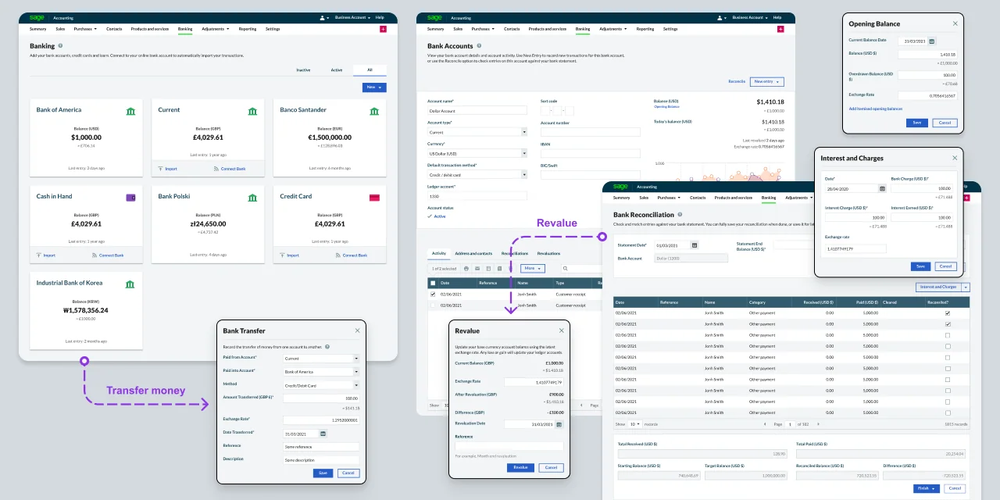
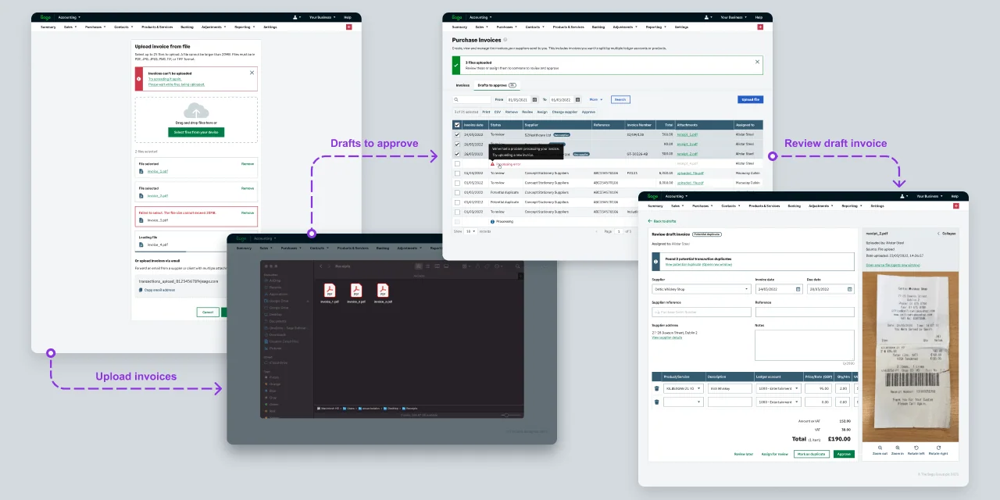
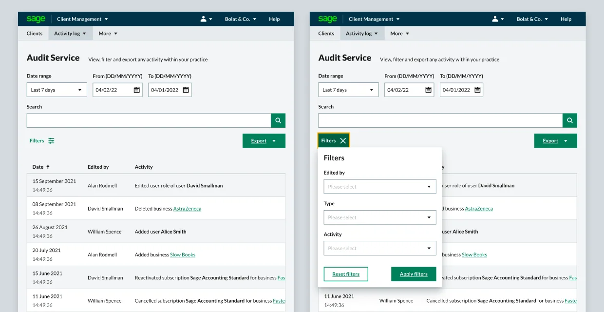

Sage services
Key projects led by me at Sage include system-level solutions such as the Audit Service, Notification Centre, Multi-Currency Bank Account, Transaction Service, Copilot and more. These projects aim to enhance user experiences across desktop and web products in Canada, South Africa, and the United Kingdom.
Sage is a software company that provides cloud-based solutions for SMEs. It helps businesses manage their money, accounting, payroll, people, and payments. The main products I've been working on are Sage Cloud and Desktop Accounting for small and medium businesses.
In compliance with the non-disclosure agreement, I’ve omitted all confidential information. The information provided here is my own and doesn’t necessarily reflect the views of Sage.
My role
While working at Sage as a Senior UX Designer, my key responsibility were solving users' problems through deep understanding, idea generation and prototyping system level solutions across desktop and web products.
I have closely collaborated with business analysts, project managers, engineering team, and copywriters to define the project direction, design solutions, test prototypes, and oversee complex projects from discovery to delivery.
As a senior designer, I mentored other designers through regular Lunch and Learns, Design Huddles, and Critique sessions. My objectives included setting a high standard for UI design quality, ensuring that we meet at least level A WCAG accessibility standards, and applying usability principles.

Examples of the multi-currency bank account screens.
Case studies
Multi-currency bank account
I've designed and tested the user experience of connecting multi-currency bank accounts to Sage Acccounting and recording transactions in multiple currencies. This helps users to manage their business across multiple countries.
The feature ensures accurate base-currency reporting by automatically recognising exchange rates on transactions and supporting on-demand revaluation of account balances. This helps companies reduce foreign exchange costs, simplify international payments, and maintain up-to-date financial visibility.

This is a simplified flow for a smart transaction service. A user uploads pictures of invoices, and then, using OCR technology, the AI extracts the relevant information and prepares draft purchase invoices. The user can either manually review each invoice one by one or approve all selected invoices automatically. The system attaches the invoice picture next to the corresponding invoice, saving time and hassle, which is essential when submitting a tax return.
Smart transactions service
Developed an AI-powered transaction service that extracts relevant data from uploaded images of receipts or invoices, eliminating the need for manual data entry. An average of 9,000 invoices are uploaded each month, achieving a success rate of 94%, with 6,800 being approved.

With the help of a debt management service, users can easily track overdue and upcoming payments. They can set up automated payment reminders to save time or send them manually when needed.
Payment reminders
Email assistance – came in handy when chasing payments.
I have created a user interface for sending payment reminder emails using an AI agent. This system automatically sends multiple or single reminders for overdue or upcoming payments to customers in South Africa and the United Kingdom. On average, a user sends around 1,300 payment reminders through the system, with 100% emails being drafted with assistance from the AI agent.

When a user mentions another user, a notification is generated. Users can access the Notification Center, which contains all notifications. They have the ability to filter and personalize which notifications to include or exclude, such as new releases, communications, newsletters, requests, and more.
Notification service
I designed a unified notification experience across all Sage products such as Accounting, HR, and Payroll to centralise alerts, messages, and system events in one place.
The solution enables users to filter and personalise which notifications they receive, and how frequently. This work established a scalable cross-product notification service that supports collaboration, improves awareness of events, and increases user control over the system.

Activity log service helps users to track events made by others – whether that's updating documents, deleting data or accessing a folder.
Activity log service
I designed the end-to-end user experience for the Audit Log service, enabling administrators to view and track user activity across Sage Business Cloud products in a secure and transparent way.
The solution makes it easy to understand who did what and when — covering actions such as logins, document changes, role updates, and user management. The interface supports filtering, data retention rules, and export for compliance and reporting.
This work helped establish a scalable, cross-product audit experience that increases trust, accountability, and visibility for managing multiple users.